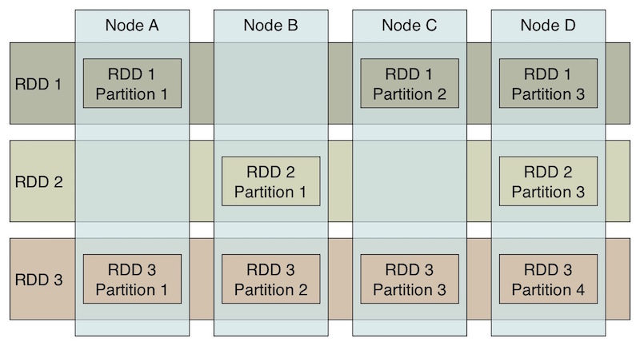
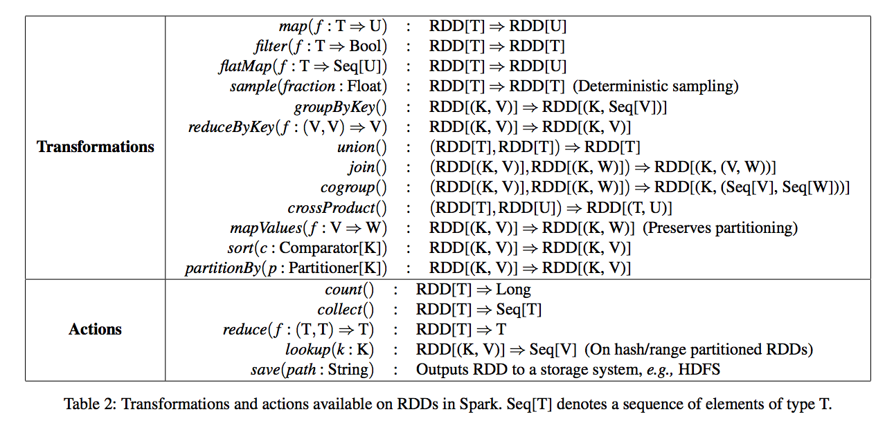
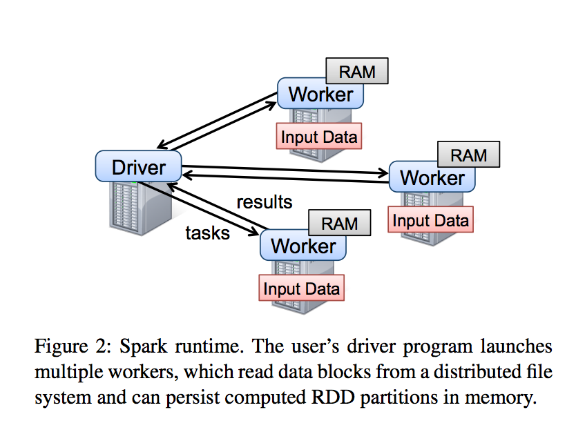
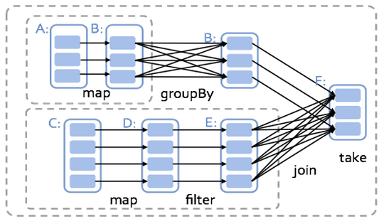
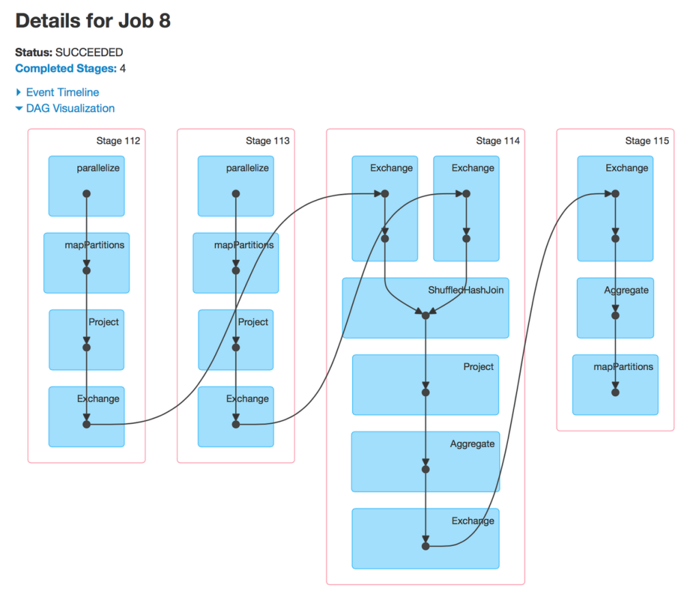
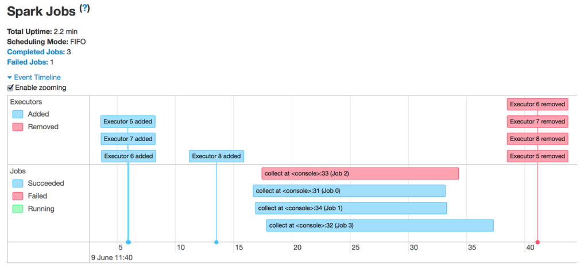

class: center, middle, inverse # Apache Spark --- class: center, middle, inverse # Why? --- class: center, middle # Because of "BigData" --- class: center # What is “Big” Data? -- Too big for one personal computer, or ... -- ... just too big for one person.strike[al computer]. -- Too big to analyze and inspect manually. --- class: center, middle # Hadoop --- class: middle # Hadoop: Map reduce <img style="width:100%; height:500px" src="images/Hadoop-Mapreduce-Architecture.png"> --- class: middle # Hadoop: YARN & HDFS <img style="width:100%" src="images/Figure3Architecture-of-YARN.png"> --- class: middle, center, inverse # Apache Spark --- # Why Spark: 1. Solves MapReduce issues -- 1. In memory -- 1. Functional style (less code, "flexable" code) -- 1. Growth -- 1. Performance .center[] --- # Spark: RDD (Resilient Distributed Dataset) 1. Distributed collection -- 1. Contains partitions -- 1. Lazy computation -- 1. Persistance --- class: middle, center # Spark: RDD  --- # Spark: Transformations & Actions  --- # Spark: API ``` scala val conf = new SparkConf().setAppName(appName).setMaster(master) val sparkContext = new SparkContext(conf) ``` -- ``` scala val data = Array(1, 2, 3, 4, 5) val distData = sparkContext.parallelize(data) ``` -- ``` scala val txtFile = sparkContext.textFile("data.txt") // From HDFS (support of different FS) ``` --- # Spark: API ``` scala /** * Return a new RDD by first applying a function to all elements of this * RDD, and then flattening the results. */ def flatMap[U: ClassTag](f: T => TraversableOnce[U]): RDD[U] = withScope { val cleanF = sc.clean(f) new MapPartitionsRDD[U, T](this, (context, pid, iter) => iter.flatMap(cleanF)) } ``` -- ``` scala /** * Return the number of elements in the RDD. */ def count(): Long = sc.runJob(this, Utils.getIteratorSize _).sum ``` --- # Spark: How to run it? ``` bash $ spark-shell --name MySpark \ --num-executors 50 \ --executor-memory 10G \ --executor-cores 2 \ --driver-memory 10G \ --conf spark.akka.frameSize=1024 \ --jars schedule-assembly-1.0.jar ``` --- # Spark: How to run it? ```bash spark-submit \ --class com.adform.SegmentationJob \ --deploy-mode cluster \ --master yarn-cluster \ --num-executors 40 \ --driver-memory 8G \ --executor-memory 3G \ --executor-cores 2 \ --queue root.dmp \ --files $SCRIPT_DIR/application.conf \ --conf config.resource="$SCRIPT_DIR/application.conf" \ --conf 'spark.executor.extraJavaOptions=-Dconfig.resource=application.conf' \ --conf 'spark.driver.extraJavaOptions=-Dconfig.resource=application.conf' \ --conf 'spark.akka.askTimeout=3000' \ --conf 'spark.akka.lookupTimeout=300' \ --conf 'spark.akka.frameSize=100' \ --driver-java-options=-Dconfig.resource=application.conf \ segment-builder-job-assembly-2.0.2-SNAPSHOT.jar \ "${IN_PATH}" "${OUT_PATH}" ``` --- # Spark: Runtime  --- # Spark: Runtime  --- # Spark: Runtime  --- # Spark: Runtime  --- # Spark: Coalease & repartition --- # Spark: Coalease & repartition --- # Spark: Best Practices - Avoid groupByKey (try to use reduceByKey or aggregateByKey) -- ``` scala def aggregate[U: ClassTag](zeroValue: U) (seqOp: (U, T) => U, combOp: (U, U) => U): U ``` -- - Don't copy all elements of a large RDD to the driver ``` scala val values = myVeryLargeRDD.collect() ``` -- - Keep track of objects serialization -- - Use Broadcasts -- - Accumulators (???) --- class: middle, center, inverse # Beyond Spark Core --- # Spark Streaming ``` scala val sc = new StreamingContext(conf, Seconds(1)) ``` -- ``` scala val kafkaStream = KafkaUtils.createStream(streamingContext, [ZK quorum], [consumer group id], [per-topic number of Kafka partitions to consume]) ``` -- ``` scala kafkaStream.foreachRDD { (rdd, time) => rdd.foreachPartition { partitionIterator => val partitionId = TaskContext.get.partitionId() val uniqueId = generateUniqueId(time.milliseconds, partitionId) // use this uniqueId to transactionally commit the data in partitionIterator } } ``` --- # Spark SQL -- - A DataFrame is a distributed collection of data organized into named columns. ``` scala val sc: SparkContext // An existing SparkContext. val sqlContext = new org.apache.spark.sql.SQLContext(sc) val df = sqlContext.read.json("examples/src/main/resources/people.json") // val parquetFile = sqlContext.read.parquet("people.parquet") df.select("name").show() ``` -- ``` scala df.filter(df("age") > 21) ``` -- ``` scala val df = sqlContext.sql("SELECT * FROM table") ``` --- # Do you want more? - MLLib -- - GraphX -- - Bagel (Pregel on Spark) -- - SparkR (R on Spark) -- - https://spark-packages.org/ --- class: center, middle # Questions?